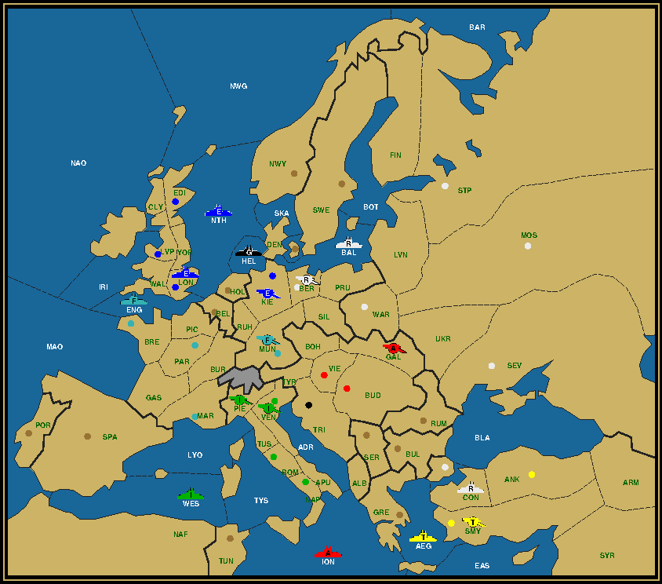
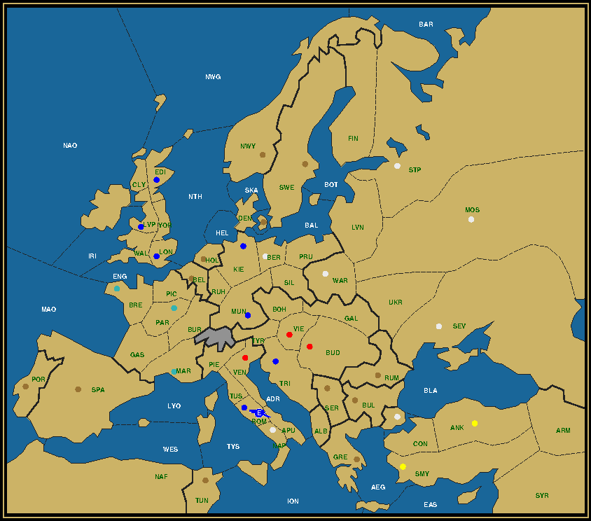

Last Man Standing is a puzzle on the Diplomacy board, whereby the whole board gets reduced to a single unit. This unit must reach its final destination in a mere four game years, without any power capturing any neutral centers and with all powers still possessing at least one unit at the end of the second year. Your goal is to reconstruct the complete game history from the map given. For more details, read the LMS Roll Call. The Dual MonarchyMission: Unfinished Requiem
Austria (1/1) A Tyr / Vie England (1/5) A Ven / Edi Lon Lvp Mar Ven Germany (0/6) Ber Bre Kie Mun Par War Italy (0/2) Nap Rom Russia (1/4) F Tri / Con Mos Stp Tri Turkey (1/4) A Bud / Ank Bud Sev Smy Vienna is perhaps best known as the city of Mozart and Opera. Mozart died at the tender age of 35, leaving behind an impressive repertoire, but also an unfinished Requiem. And so it is with this puzzle, of which we only get to see the situation at the start of 1904. Complete the final year, then come back to fill in the seasons before. Add some classical music in the background to give you some genial insights. Mission: Between Buda and Pest
England (0/5) Ber Edi Kie Lon Lvp France (1/7) A Bud / Bre Bud Mar Mun Par Ven Vie Italy (0/3) Nap Rom Tri Russia (0/2) Mos Stp Turkey (0/5) Ank Con Sev Smy War Between Buda and Pest flows the mighty, blue Danube. But the Johan Strauss composition of the same name has lyrics that praise... Vienna. Budapest is the capital of Hungary, the territory of the Huns, whose cavalry armies once raided through Europe well into France or, as it was then called, the Frankish Empire. The French and their allies have had ample occasion to return them the favor in later centuries, occasionally liberating them from the Mongol and Ottoman hordes. They can do so one more time on this map. The positions of the armies at the start of the final year requires some careful thinking. Report: All Roads Lead to Rome — Army Liverpool to Rome
The road to Rome is easy to track for the English army. First a convoy to Kiel, a single move to neighboring Munich, then on to Trieste and finally Rome. He's in the company of an Austrian army --probably a sniper early on, as Austria didn't catch many centers-- and a Russian fleet. No, not the one from St. Petersburg's south coast, as the farthest that fleet can travel in six turns is to Mid-Atlantic Ocean. Sevastopol is the only logical choice. Disappointed? The signs are there though. Constantinople is Russian, captured by the fleet in 1901 on its way to Naples. Like England it dragged its feet --or engines-- somewhat, because it's only three steps from there to Naples. Why that's important will be revealed later. Let's first turn our eyes to the North. The North Sea graveyard The problem with any Southern destination is, how do you get rid of all those fleets up North? There are 5 of them, one more than in the South. Some of these, like the French fleet in Brest, are close enough to the Mediterranean to try and reach the destination. But some are just too far away, chief among them the Russian Northern fleet in St. Petersburg. One way of getting rid of that fleet was demonstrated in The Costly Case of the Last Man Standing, by using the German fleet and army and dislodging it from Livonia in the Fall of 1901. But with the German fleet needed to convoy Army Liverpool to Kiel, this is out of the question, at least for 1901. Another approach is to take enough Russian centers that the fleet can be disbanded. But in this game Russia ends up with 7 centers, including all its home centers. It doesn't seem likely that it had a deficit in 1901. There's a third way, dubbed the "North Sea graveyard". All that's needed are two sniper fleets. Germany provides the first, as we can observe that Germany lost all its centers by the Winter of 1903. Italy adds the second, sending Fleet Naples to the Atlantic. After the Fall 1901 convoy to Kiel there are 4 movement turns left. Every turn one fleet gets picked off in and around the North Sea among the French, English and Russian navies. What remains after Fall 1903 are the two sniper fleets, which get disbanded as they lose their last or --in the case of Italy-- next to last center. For this to succeed, Germany needs to own one of the occupied centers on the After Winter 1903 map. Either Venice or Trieste will do, the other (or the other two if we include Naples) can be Italian. The task of capturing this extra German center can be trusted to Army Munich, which can reach either of them by traveling through Tyrolia in Spring 1901. Justinian's ambition Justinian was a Byzantine emperor who lived after the fall of the Western Roman Empire. He temporarily managed to recapture Rome and most of the Mediterranean coast, making him for some the true last Emperor of Rome. But his capital was Byzantium, or Constantinople, after the Emperor who founded the city that would become the capital of the Eastern Roman Empire. In modern times he would be neither Roman or Greek, but a Turk. I mention him, because Turkey has a problem in this puzzle. The Turks can readily disband an army in the first Winter after losing Constantinople to Russia. The Turkish fleet can move in front of the Russian fleet and be dislodged as soon as some other unit pulls in front. But what about the second army? Let's look at our options. The first option is that it stays in Turkey and gets dislodged by F Sev with support from some other party. This can best be done in Spring of 1902, because in Fall 1902 F Sev needs to be in the Aegean or Eastern Med in order to make it in time to Naples. What are the candidates for the support? Not F Nap, already on its way to the North Sea. Not F Tri, who can only get as far as the Ionian in the first year. F Ank won't be of much help against his own compatriot. A Bud cannot make it to Turkey without a fleet in the Black Sea to convoy him. And A Mos just relays the problem to how to get rid of a Russian army instead of a Turkish army. The second option is to let the Turkish army move towards Italy on his own account. He cannot move through the Balkans, as that would land him on a neutral supply center in the Fall, breaking one of the rules for this puzzle. He might try to move through Russia. Notice that Sevastopol is still Russian after 1903. Since this center is pretty far from Rome, it's safe to assume that it was not lost to Turkey in 1901 and retaken by Russia in 1902. That means that the army would have to wait in Armenia in 1901 and could only get as far as the Ukraine in 1902. How it could then disappear from the map in 1903 becomes a great mystery. And yet, there's one other path, by convoy straight into Italy in 1902. That would bring it at the front of the chain that starts with F Sev in the Aegean, F Tri (after dislodging F Ank) in the Ionian, and in range of the Italian army in Apulia. Just like Justinian. The complete picture With these two strategies explained, let's look at the full solution.
 A Mar and A Mos are taken off the board and Germany loses all his home centers right off the bat. It's a good thing that he took Trieste.
A Con (Justinian) gets convoyed right into Naples. Notice how F Bre pulls back to the Channel in order to keep one French unit around, as each power needs to keep a unit going into 1903. If it wasn't for that concern, it would have been perfectly possible to do all the dislodgements in the North Sea.
One after the other enters Naples, pushing out the previous occupant. A prelude to the next puzzle? The same is happening in the North Sea.
 Click here for the complete solution. A classic ending. Army Liverpool conquers a third capital, with blessings from the Pope. Report: See Naples and Die — German Army to Naples
The biggest difference between this and the previous puzzle is that France now serves as the gateway to Italy. This has a big influence on how to play the West, but it hardly affects the East. We can still stage a convoy from Turkey to Italy. And by replacing F Kie with F Bre we can still eliminate the fleets up North. Unlike F Kie, F Bre starts on the same side as F Nap relative to the North Sea, making it slightly more difficult to get that accordion effect. The first question to answer is which German army will triumph in Naples. If we take a clue from the previous puzzles, normally the LMS leaves a trail behind of conquered centers. If that's the case here, the answer is simple. Tracing back from Naples, we see a German center in Venice, Marseilles and Paris. All are two removed from each other, pointing squarely at Munich as the starting point. The second question mark is predicting who was still around after 1903. This is more difficult to answer. Or rather we have some choice there. We know that there are usually four units left and that at least two centers need to be captured the previous Fall, one French, one Italian, in order to disband the two remaining sniper fleets around the North Sea. In the case of Naples these two centers can only be Rome and Venice. Indeed, Venice is German, confirming this line of thought, while Rome is Turkish. Apparently this time Justinian will make it to Rome. The third raider is more of a mystery, but since it needs to be next to Naples at the start of Spring 1904, chances are that it's a fleet. But which one? F Sev is the most likely, as she starts the farthest away from Naples. But since Naples is one move closer than Rome, it could also be F Tri. Or why not F Ank? Although this would leave two Turks in the final year, given that both will be attacked by a German army with support from an Italian, their common nationality is not an issue. Riddles galore The answer is given by the riddle. In old Napoli, one was born, one passed through, one returned, but only one survived to tell the tale. I'll explain as I walk you through the solution. And for those who love riddles, here's a second one. French ports are best consummated as second servings. I'll come back to that as well.
The one born in Naples is the fleet built there after disposing of A Rom in Venice. By taking Trieste, Italy retains its numbers, while France obtains the center that will keep its fleet afloat in 1903. But the most intriguing development is the convoy of A Lvp to Gascony instead of Brest. Both French ports remain open, giving us more snipers in 1902. And they will be needed.
A Con passes through Naples on its way to ... Apulia. Indeed, it's a year too early to take Rome. Convoying straight to Apulia is certainly allowed, were it not for the exigencies of the riddle. If I chose the Austrian fleet over the Turkish fleet, it's merely to have Austria still with a unit left. Note the deft choreography in the Atlantic that lands F Edi in Brest.
Another operatic twist and turn as F Tri enters Naples, moving out again to dislodge F Sev. But not for long. Meanwhile the clean-up in the West achieves its goals without recapturing Brest.
Click here for the complete solution. F Tri briefly returns to Naples before being washed aside by the triumphant A Mun, the sole survivor. Goethe will be pleased. Faust maybe not. Triumph des Lebens über den Tod. PiccolitosHints come in two flavors. Sometimes they're intended to warn against pitfalls. Ignore these at your peril. Sometimes they're merely intended to guide one to a particular solution where more than one exists. If these confuse you, it may pay off to pay attention to them only after finding a first solution. The French port riddle is an example of the first kind, as it's tempting to capture Brest already in the first year. The visit to Naples riddle belongs to the second category. A useful distinction? That's for you to decide. I'm adding the games lvp-rom and mun-nap to UKDP. These start off where they ended here, in the Winter of 1904. Hop over and join one to take it further past its logical conclusion.
If you wish to e-mail feedback on this article to the author, and clicking on the envelope above does not work for you, feel free to use the "Dear DP..." mail interface. |